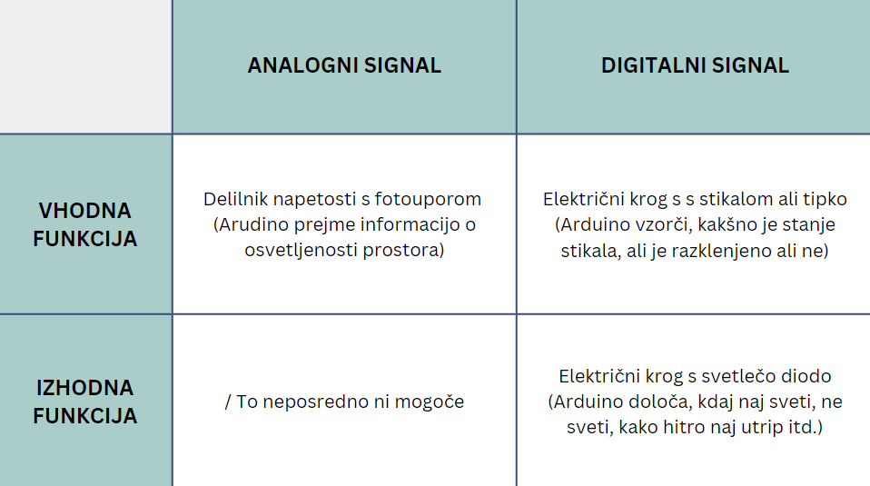

Priključki
Pomemben del Arduino krmilnikov so priključki, z nekaterimi izmed njih lahko krmilimo, z drugimi pa poleg tega tudi odčitavamo analogna stanja.
Priključke na Arduino vezjih lahko razdelimo po njihovih funkcijah:
- digitalni izhod(omogočajo digitalno krmiljenje)
- digitalni vhod(omogočajo digitalno vzorčevanje)
- analogni vhod(omogočajo analogno vzorčevanje napetosti)
Priključka, ki nam bi omogočal analogno krmiljenje ni.
Priključek, ki nam omogoča digitalno krmiljenje in vzorčevanje, lahko v določenem trenutko uporabljamo le za krmiljenje ali vzorčenje. Torej priključek ne more sočasno izvajati obeh nalog.
Če priključek uporabljamo v funkciji digitalnega izhoda, lahko programsko določimo napetostni potencial na priključku. Le ta je lahko v obliki visokega (logična 1 oziroma približno 5V) ali nizkega (logična 0, 0V) napetostnega stanja. Tak priključek ima takrat funkcijo izhodne enote glede na vezje Arduino.
Kadar priključek uporabljamo kot digitalni vhod, takrat lahko programsko ugotovimo, ali je priključek priključen na višji ali nižji napetostni potencial. V kolikor lahko priključek uporabimo kot analogni vhod, to pomeni, da lahko ločimo med več različnimi vrednostmi napetostnega potenciala in ne le med dvema, kot je to mogoče pri digitalnem vhodu. Če uporabljamo Arduino Nano, lahko razlikujemo med 1024 različnimi stanji napetostnih potencialov v intervalnem območju med 0 in 5V.
Kakšno funkcijo naj priključek izvaja, določimo programsko.
Štetje priključkov
- Pri vseh integriranih vezjih in elektronskih vezjih Arduino je pomembno, da znamo šteti njihove priključke, saj jih le tako lahko ustrezno vključimo v ožičeno elektroniko.
- Pri elektronskih vezjih Arduino so priključki še dodatno označeni, pri ostalih mikrokrmilnikih in krmilnikih navadno temu ni tako, zaradi česar obstaja dogovorjen način štetja priključkov.
- Vedeti moramo kako je mikrokrmilnik pravilno obrnjen, pri vezjih Arduino je običajno zgornji del ravno nasproti priključka za napajanje, pri mikrokrmilnikih pa je navadno ta del označen z na ohišju izdolbenim polkrogom ali krogom.
- Ko imamo pravilno postavljeno vezje ali mikrokrmilnik, lahko pričnemo s štetjem. V levem zgornjem kotu je priključek 1, pod njim priključek 2 in tako do konca tega roba. S štetjem nadaljujemo s priključkom desno spodaj vse do vrha.